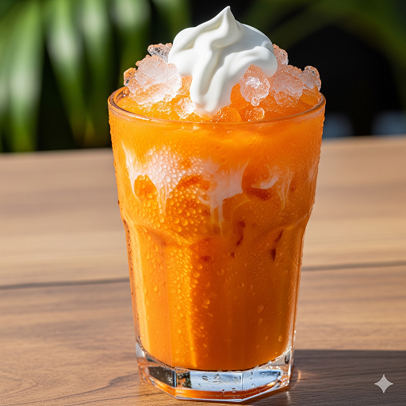
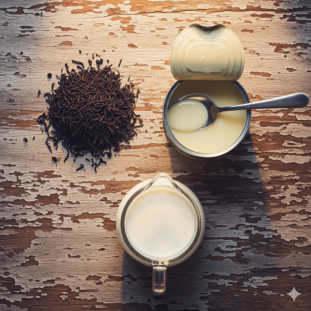

Gold
手標金裝
50%
精準半糖
1:10
茶水比例
準備材料
-
TEA
手標金裝茶葉：50g (金標香氣更細緻)
-
H2O
熱水：500ml (溫度 95°C 為佳)
-
MILK
泰國奶水：淡奶，乳脂含量是關鍵
-
SWEET
煉乳：提供濃縮甜度與稠度

復刻步驟
1
悶泡濃縮液
滾水關火，加入茶葉攪拌 30 秒。蓋上蓋子悶泡 8-10 分鐘，將風味鎖在茶湯中。
2
精華萃取
使用濾袋過濾時，請用力擠壓茶渣，直到最後一滴亮橘色精華流出。
3
調配半糖比例
100ml 濃縮液 + 15ml 煉乳 + 20ml 奶水。攪拌至完全融合。
4
撞冰與淋奶
將混合液倒入裝滿碎冰的杯子，最後在頂部補上 20ml 奶水，完美呈現層次感。
職人祕訣 (Pro Tips)
Never Add Water
不要額外加水。奶水與碎冰融化後的水量已足以稀釋出最濃郁的比例。
Cold Clouds
冷藏後的濃縮液變濁是正常的高品質現象，加熱或加入熱奶水後即恢復清澈橘色。
Storage
製作成「泰奶冰塊」是長期保存的最佳方法，飲用時風味完全不稀釋。